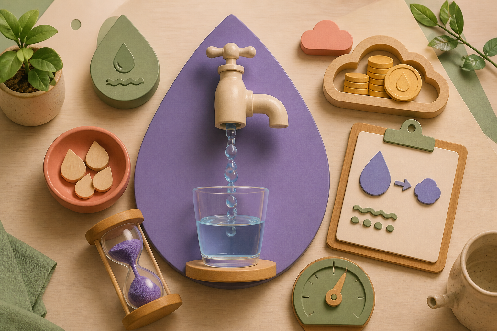

Recipiente + cronômetro
Conversor de vazão de torneira
Meça quanto tempo leva para coletar um volume conhecido e converta a vazão.

Como medir
Abra a torneira na posição que deseja testar, coloque um recipiente de volume conhecido sob o fluxo e cronometre. Repita a medição para reduzir variações.
A ANA define vazão como volume por período. O Manual da Funasa apresenta medição com recipiente de volume conhecido e conversão para litros por minuto.